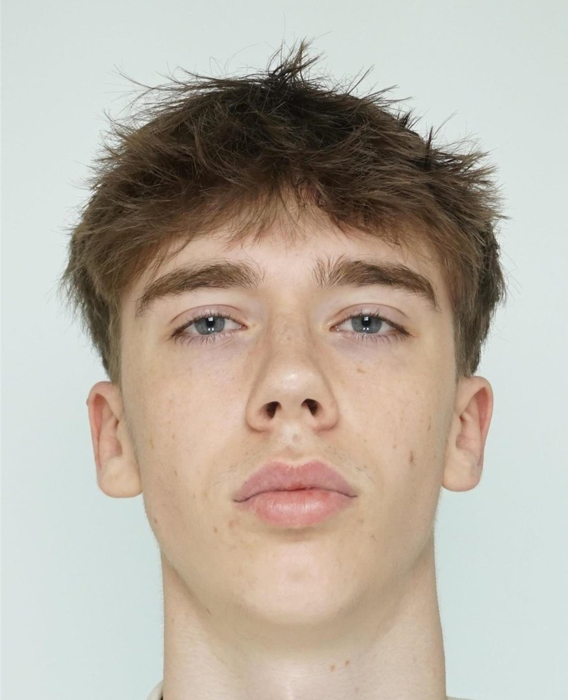

IT-süsteemid
Vundament, mis tagab, et kõik ühendub, töötab ja on turvaline.
- Arvutivõrgud
- Windows Server
- DHCP ja PXE
- vCenter
- Tõrkeotsing
- Dokumenteerimine
IT-süsteemid → tarkvara arendus
Tere! Lõpetasin Viljandi Kutseõppekeskuses IT-süsteemide nooremspetsialisti (tase 4) eriala. Tean, kuidas arvutid, võrgud ja serverid päriselt tööle saada, ja nüüd õpin tarkvara arendust, et ise lahendusi ehitada.
Minu lõputöö: Windowsi masspaigaldus
Eksamitööna ehitasin Viljandi Kutseõppekeskuse füüsilisele serverile lahenduse, mis paigaldab Windows 11 uutele arvutitele võrgu kaudu. Ühelt eeskujuks olevalt arvutilt tehakse pilt (image), mis salvestatakse serverisse ja laaditakse sealt igale uuele arvutile.
1–3 h → 10–15 min ühe arvuti ettevalmistus
Viljandi Kutseõppekeskus
Õppisin IT-taristu loomist ja hooldust: riistvara, arvutivõrgud, serverid ja süsteemihaldus, infoturve, kasutajatugi ja dokumenteerimine. Lõputööks ehitasin Windows 11 masspaigalduse TheOpenEM-iga.
Praegu
Õpin programmeerimist ja veebiarendust. Süsteemide tundmine aitab mul aru saada, kus ja kuidas kood päriselt töötab.
Vundament, mis tagab, et kõik ühendub, töötab ja on turvaline.
See, mida ma praegu õpin.
